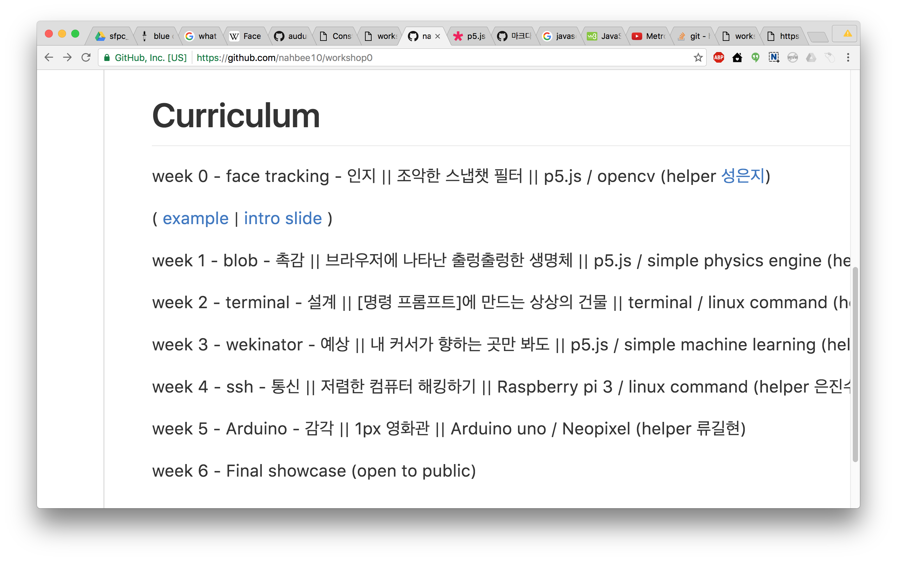
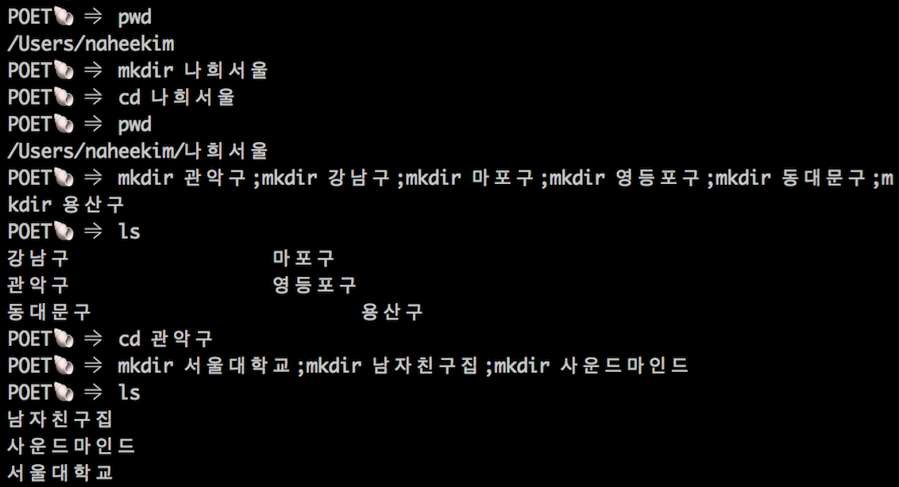
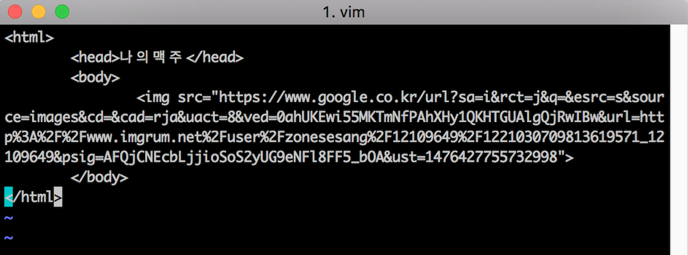
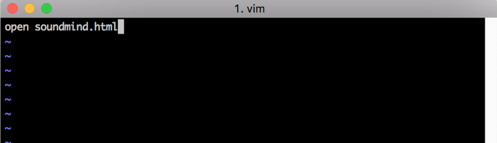
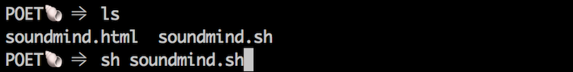

workshop0
week2 | Cmd line / git
예제보기
https://github.com/nahbee10/workshop0 shell
명령어를 받아서 작업을 수행해주는 프로그램 personal computer 개발 초반에 컴퓨터와 사람이 상호작용하는데 쓰이던 인터페이스 - command line interfaces (CLIs)열어보기
Win : 프로그램 검색 > cmdMac : 프로그램 검색 > terminal
기본 명령어
- cd(change directory): 다른 디렉토리로 이동
- pwd(print working directory): 지금 있는 위치 출력
- ls(list): 내가 속해있는 폴더 안에 있는 폴더/파일 보기
- mkdir(make directory): 새 폴더 만들기
- rm(remove): 파일 지우기
- rm -r: 폴더 지우기
나의 명령어 만들기
- alias 짠='mkdir'
- alias 가자='cd'
- alias 어디가지='ls'
- alias 나는어디='pwd'
- alias 쾅='rm -r'
서울 지도 그리기
생각나는 곳, 자주가는 곳서울-관악구-서울대학교-64동-302호 처럼 체계를 생각하기
'서울' 폴더 만들기
생각해둔 '위계'에 맞춰 내 머리 속의 체계 폴더에 옮기기linux command 이용하기 
발전 - 사물 놓기 1
[나의위치]/User/naheekim/서울/관악구/사운드마인드'사운드 마인드'에 들어가면 맥주가 있었으면 좋겠다.
간단한 웹페이지를 만들고 shell script를 활용해서 맥주 사진이 들어있는 웹페이지를 열어보자
발전 - 사물 놓기 2
vi - command line 의 문서편집기편집 시작하기 : 'i' 클릭하기

저장하고 나가기 : ':wq' 키보드로 치고 엔터
발전 - 사물 놓기 3
웹페이지를 켜주는 shell script만들기i 누르고 하단 코드 입력 
발전 - 사물 놓기 4
shell script로 맥주 사진 페이지 열기
맥주 그림이 잘 나오나요?
git 다운로드 받기
https://git-scm.com/downloads사용하는 OS에 맞춰 git을 다운로드 받고 설치해주세요
git 이란?
소프트웨어 개발에서 사용되는 버전 관리 시스템!
이것의 스마트한 버전...
github 이란?
git의 저장소를 웹에 올려둘 수 있도록 개발된 서비스
누군가 개발한 코드를 웹에 바로 올려서 공유할 수 있다.
git 명령어
git configuration
cmd/터미널을 열고
git config --global user.name "username"
git config --global user.email "user email"
내가 작업한 폴더 github에 올리기
- github.com 접속 및 로그인
- repository 만들기
- 자기 컴퓨터에 repository 받기(clone)
- add/commit/push 사용해서 github에 올리기
Homework
'The nature of code' repository
clone해서 자기 컴퓨터 받기
마음에 드는 예제 열어보고
오늘 만든 자기 github.io 페이지에 올려보기